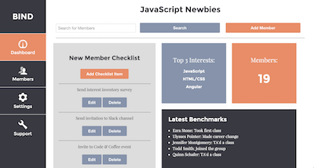

About
Web Developer — Charlottesville, VA
I'm a strategic communications professional turned web developer focused on creating user-friendly software. I have demonstrated success quickly learning technical concepts and uncovering deeper understanding. I'm most delighted when sharing my expertise helps others achieve their goals. Resume
Portfolio
Bind | Encourage New Member Engagement
Bind encourages relationship building and new member retention for organizations/meetup groups. An administrator can develop a "checklist" of items to perform for all new members to the organization. It allows the user to:
- create/edit/delete members,
- create/edit/delete checklist items,
- mark off which checklist items have been completed for members,
- and add/remove benchmarks for member milestones.
Lyricks | Generate Stylized Cards from Song Lyrics
Lyricks generates decorative cards with a user's favorite song lyrics. Inspired by Litographs for books. It allows the user to:
- create cards by entering a title and song lyrics,
- select an icon to adorn a card,
- select the card's text color and font,
- make the card public or private,
- add genre tags to a card,
- view other user's public cards (but not edit/delete their cards),
- browse cards by genre,
- edit/delete user profile,
- and upload a profile picture.
Alpha - Zulu | Flashcard Application
Alpha - Zulu is a flashcard application to help aspiring private pilots memorize important information like the phonetic alphabet and emergency procedure checklists. It allows the user to:
- flip to the opposite side of the card,
- cycle forwards and backwards through the stack,
- get a random card from the stack,
- mark a flashcard complete and remove it from the stack,
- refresh the flashcard stack,
- and create a custom stack of up to 50 flashcards.
Geise Research Group Website

The Geise Research Group Website is a static website built using the Twitter Bootstrap framework. It shares information about the group's polymer membrane research at the University of Virginia.
Cross Stitch: Express.js & 3rd Party API Tutorial
The Cross Stitch tutorial, hosted on GitHub, creates an Express app that makes a call to the Etsy API and uses Handlebars to craft templates.